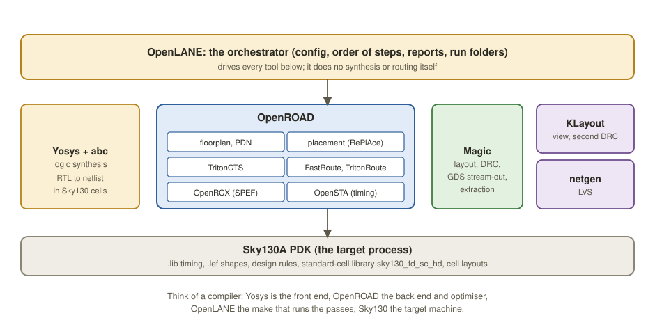

Chapter 9: Running the Flow with OpenLANE¶
Everything in the earlier chapters, synthesis, floorplan, placement, clock tree, routing, timing, DRC and LVS, and tapeout, is real software that you can run for free on your own machine. This chapter is a practical, step-by-step laboratory. You install the open-source toolchain, configure a small design, push it from RTL to a GDSII file with one command, inspect what came out, and then deliberately break timing and change utilisation to see how the tools react. At the end, a set of exercises and a capstone project asks you to repeat the process on designs of your own.
Learning outcomes
After this chapter you can:
- Name the tools of the open-source stack and the stage each one owns.
- Install OpenLANE with the Sky130 PDK and configure a design.
- Run RTL to GDSII with one command and find the outputs.
- Read WNS and TNS, DRC and LVS results and the area and utilisation of a run.
- Run experiments (a tighter clock, a higher utilisation) and explain the results.
9.1 The open-source stack¶
There is no single "chip compiler". The flow is a pipeline of specialist tools, each owning one stage, stitched together by an orchestrator (Figure 9.1).

| Tool | What it owns | What it produces |
|---|---|---|
| OpenLANE | orchestration | runs every step in order, applies the configuration, collects reports and tags runs |
| Yosys (with abc) | logic synthesis | a gate-level netlist .v mapped to Sky130 cells |
| OpenROAD | floorplan, placement, clock tree, routing, timing | DEF files, the routed database, timing reports |
| OpenSTA, TritonCTS, FastRoute, TritonRoute | static timing, clock tree, global and detailed routing (inside OpenROAD) | slack reports, a balanced clock, a routed design |
| Magic | layout, DRC, GDS stream-out, extraction | DRC report, .gds, parasitics |
| KLayout | viewing and a second DRC opinion | views and checks of the final GDS |
| netgen | LVS | the layout-versus-netlist report |
| Sky130A PDK | the target process | .lib, .lef, rules, standard-cell layouts |
Table 9.1 Who does what.
OpenLANE is the conductor. It is a set of Tcl scripts and a configuration system that calls each underlying tool in the right order, hands the output of one stage to the next and collects the reports. It does not do synthesis or routing itself. OpenLANE was created by Efabless around the SkyWater Sky130 PDK to support the free shuttle programme for open-source chips.
Think of a software compiler toolchain. Yosys is the front end, which lowers source to an intermediate form; OpenROAD is the back end and optimiser (instruction selection and scheduling, here placement, routing, clock tree and timing); OpenLANE is the make that runs the passes in order; and the Sky130 PDK is the target machine you compile for. The PDK ships the standard-cell libraries (sky130_fd_sc_hd, the high-density family, is the common default), the timing .lib files, the physical .lef abstracts, the layer and DRC rules and the cell layouts, everything the tools need to know about the process.
9.2 Installing the toolchain¶
You have three realistic routes; pick one.
Option A: Docker-based OpenLANE (the classic OpenLANE 1, recommended). The tools are notoriously fiddly to build, so OpenLANE ships them in a Docker image and you need only Docker, Python and make. This is the most reproducible route and matches almost every tutorial.
# Needs git, docker, make, python3 (on Windows, work inside WSL2)
git clone https://github.com/The-OpenROAD-Project/OpenLane.git
cd OpenLane
# Pull the tool image and install the Sky130 PDK (through ciel, formerly volare)
make
# To manage the PDK explicitly:
pip install ciel # formerly 'volare'
ciel enable --pdk sky130
# Smoke test: run the bundled SPM example design end to end
make test
# -> prints "Basic test passed" and creates a runs/ folder when all is well
The PDK is large and versioned. ciel (recently renamed from volare) is a small package manager that fetches a pre-built, known-good Sky130 build and pins its version, so that your results can be reproduced; make calls it for you and you rarely run it by hand.
Option B: OpenLane 2 with Nix. OpenLane was re-architected in Python, away from the Tcl-heavy version 1. It is installed with Nix, which pins exact tool versions declaratively, or as a Python package, and exposes the flow as composable Python steps. The ideas of this chapter carry over; the entry commands differ.
# OpenLane 2 (nix-shell gives a shell with every tool at a pinned version)
git clone https://github.com/efabless/openlane2.git
cd openlane2
nix-shell
openlane --dockerized ./designs/spm/config.json
Option C: the cloud. If you cannot install locally, run the Docker image on any Linux virtual machine, in a GitHub Codespace, or in a notebook environment that installs the flow with pip. This needs no set-up and suits a first look.
Common misconception
"OpenLANE is the tool that does synthesis and routing." It is not: OpenLANE is only the driver. When a run fails in, say, detailed routing, the real error and its log come from TritonRoute inside OpenROAD, not from OpenLANE. Always read the failing stage's own log in runs/<tag>/logs/, and not just OpenLANE's top-level output.
9.3 A design folder and its configuration¶
Every design lives in its own folder under designs/. The minimum is the Verilog sources and a configuration file.
OpenLane/
designs/
my_counter/
src/
counter.v # your RTL (one or more .v files)
config.json # the design's configuration (config.tcl is the legacy form)
The configuration says what to build and sets the key knobs. JSON is the modern format; Tcl is the legacy equivalent. A realistic minimal config.json:
{
"DESIGN_NAME": "counter",
"VERILOG_FILES": "dir::src/counter.v",
"CLOCK_PORT": "clk",
"CLOCK_PERIOD": 10.0,
"FP_CORE_UTIL": 45,
"PL_TARGET_DENSITY": 0.55
}
| Key | Meaning | Typical value |
|---|---|---|
DESIGN_NAME |
the top module's name; it must equal the name in the Verilog | "counter" |
VERILOG_FILES |
the RTL sources; dir:: is relative to the design folder |
"dir::src/*.v" |
CLOCK_PORT |
the name of the clock input in the RTL | "clk" |
CLOCK_PERIOD |
the target clock period in ns; it drives every timing check | 10.0 (100 MHz) |
FP_CORE_UTIL |
the target core utilisation, %, for the initial floorplan | 40 to 50 |
PL_TARGET_DENSITY |
the placement density target (0 to 1), usually a little above utilisation divided by 100 | 0.5 to 0.6 |
DIE_AREA, FP_SIZING |
a fixed die box "x0 y0 x1 y1" when FP_SIZING is "absolute"; otherwise the die is sized from the utilisation |
"0 0 150 150" |
Table 9.2 The essential configuration keys.
You control the size of the die in one of two ways: give an absolute DIE_AREA, or let OpenLANE size the die from FP_CORE_UTIL, so that it fits your cells at that utilisation. Use utilisation-based sizing while you iterate, and pin an absolute size only when you must meet a fixed footprint. The two are alternatives: with FP_SIZING set to "absolute" the die is fixed by DIE_AREA, so a configuration that sets both an absolute size and a utilisation, as the course's sample page does, makes the utilisation setting meaningless. The configuration above uses relative sizing only. The area and utilisation arithmetic is that of Chapter 3.
9.4 Lab 1: a design from RTL to GDSII¶
Push a real design through. Here is a small synchronous counter, saved as designs/my_counter/src/counter.v.
module counter #(parameter WIDTH = 8) (
input wire clk,
input wire rst_n,
input wire en,
output reg [WIDTH-1:0] count
);
always @(posedge clk or negedge rst_n) begin
if (!rst_n) count <= {WIDTH{1'b0}};
else if (en) count <= count + 1'b1;
end
endmodule
(For a meatier design, replace it with a small ALU, such as the add, subtract, and, or, xor, set-less-than and shift unit built in the HDL book, and set DESIGN_NAME and CLOCK_PORT to match.) Now run the whole flow with one command.
# From the OpenLane repository root
make mount # enter the tool container
./flow.tcl -design my_counter -tag run1 # the WHOLE flow, with a run name of your own
# Handy variants:
./flow.tcl -design my_counter # tagged automatically by date
./flow.tcl -design my_counter -from synthesis -to routing # part of the flow
./flow.tcl -design my_counter -interactive # step through it (Section 9.7)
OpenLANE marches through the stages, the same pipeline as the rest of this book.
| # | Stage | Tool | What happens |
|---|---|---|---|
| 1 | synthesis | Yosys with abc | RTL becomes a netlist of sky130_fd_sc_hd cells; first area and cell-count report |
| 2 | floorplan and power grid | OpenROAD | die and core, rows, I/O pins, power ring and straps |
| 3 | placement | OpenROAD (RePlAce) | global, then detailed placement and legalisation |
| 4 | clock tree | TritonCTS | clock buffers inserted to balance skew |
| 5 | routing | FastRoute, then TritonRoute | global, then detailed routing on the metal stack |
| 6 | extraction, timing, DRC, LVS, GDS | OpenRCX, OpenSTA, Magic, netgen | parasitics (SPEF), static timing, DRC, LVS, antenna check, GDS stream-out |
Table 9.3 The stages of an OpenLANE run.
Every run has its own folder, and the output tree is where you will spend your time.
designs/my_counter/runs/run1/
results/
synthesis/ counter.v # the gate-level netlist
floorplan/ counter.def
placement/ counter.def
cts/ counter.def
routing/ counter.def # fully routed
final/
gds/ counter.gds # the final GDSII: the tapeout file
def/ lef/ spef/ verilog/ # final views for reuse
reports/ area, timing, DRC and LVS summaries per stage
metrics.csv # the headline numbers, one line
logs/ each tool's own log: read these when something fails
config.tcl, cmds.log # exactly what was run
Milestone
When the run finishes green, runs/run1/results/final/gds/counter.gds is a real, DRC-clean physical layout of your design in 130 nm silicon. That one file is what a foundry would turn into masks. You have run a tapeout-quality flow on your own computer.
9.5 Lab 2: reading the results¶
A green run is not the end; the reports say how good the result is. Four things to check.
a) Look at it. Open the layout in KLayout (fast and cross-platform) or in Magic with the Sky130 technology.
klayout designs/my_counter/runs/run1/results/final/gds/counter.gds
magic -T sky130A.tech designs/my_counter/runs/run1/results/final/gds/counter.gds
You will see rows of cells, power rails at the top and bottom of each row, coloured metal above them and vias stitching the layers. Zoom in far enough and the individual gates appear.
b) Timing. Read the worst and total negative slack.
cat designs/my_counter/runs/run1/reports/signoff/*sta*summary*.rpt
# in OpenSTA or interactive OpenROAD:
report_checks -path_delay max -fields {slew cap input nets fanout} -format full_clock
report_wns
report_tns
WNS \(\ge 0\) means that every path meets timing at your CLOCK_PERIOD. A negative WNS is the single worst path's shortfall in ns, and TNS sums all violations, telling you how widespread the problem is (Chapter 7).
c) Physical checks. Signoff must be clean to tape out.
cat designs/my_counter/runs/run1/reports/signoff/*drc*.rpt # want: 0 violations
cat designs/my_counter/runs/run1/reports/signoff/*lvs*.rpt # want: "Circuits match uniquely."
d) Area and utilisation.
grep -i "area\|cell count" designs/my_counter/runs/run1/reports/synthesis/*stat*.rpt
grep -i "util\|die\|core_area" designs/my_counter/runs/run1/reports/metrics.csv
A modern OpenLANE run also writes a single metrics.csv that collects the headline numbers (area, utilisation, WNS, TNS, DRC count, wirelength, power): the fastest way to compare runs at a glance.
9.6 Experiments¶
Now make the tools react. Change one knob, run again, compare metrics.csv.
Experiment 1: break timing on purpose¶
Tighten the clock aggressively.
# in config.json: "CLOCK_PERIOD": 2.0 (was 10.0: 100 MHz becomes 500 MHz)
./flow.tcl -design my_counter -tag fast_clk
Predict first: will setup or hold fail? Setup, because the clock period appears only in the setup check. Expect WNS to go negative and TNS to grow; the run may still complete, but it flags the timing violations. The critical path in the report is the carry chain of count + 1. Raise the period step by step, 3.0, 4.0 and so on, until WNS \(\ge 0\) again. That period is your design's \(f_{max}\), timing closure in miniature.
Experiment 2: pack it tighter¶
# in config.json: "FP_CORE_UTIL": 65 (was 45), "PL_TARGET_DENSITY": 0.72 (raised to match)
./flow.tcl -design my_counter -tag dense
The die shrinks, which is cheaper. But congestion rises, routing takes longer, and if you push far enough routing fails or DRC errors appear. Compare die area, wirelength and WNS between run1 and dense. That triangle of area, timing and routability is what physical designers live in. High utilisation gives a small, cheap die that is congested and hard to route; low utilisation is easy to route and better for timing but costlier. There is no universally right number: the flow is a search.
9.7 Driving the flow step by step¶
Sometimes you want to drive the physical stages by hand, to debug, to try a command or to understand what OpenLANE automates. There are two ways in. First, OpenLANE's interactive mode runs the flow one step at a time from a Tcl prompt.
./flow.tcl -design my_counter -interactive
# then, at the interactive prompt:
package require openlane
prep -design my_counter
run_synthesis
run_floorplan
run_placement
run_cts
run_routing
run_magic ;# DRC and GDS
run_lvs
# inspect the results after any step before going on
Second, OpenROAD has its own Tcl shell, so you can read the physical views and run individual engines directly.
openroad
# --- load the design ---
read_lef merged.lef
read_def results/floorplan/counter.def
read_liberty sky130_fd_sc_hd__tt_025C_1v80.lib
# --- run engines by hand ---
global_placement -density 0.55
detailed_placement
clock_tree_synthesis -buf_list sky130_fd_sc_hd__clkbuf_4
global_route
detailed_route
# --- analyse ---
report_checks -path_delay max ;# setup
report_checks -path_delay min ;# hold
report_wns ; report_tns
write_def out.def
write_verilog out.v
Interactive mode is how you learn what each OpenLANE variable really does and how you debug one failing stage: reproduce just that step, change a command and rerun it in seconds instead of rerunning the whole flow. Every command above is what OpenLANE issues under the hood.
9.8 When things go wrong¶
| Symptom | Likely cause and fix |
|---|---|
| routing fails, "unroutable" | utilisation or density too high: lower FP_CORE_UTIL and PL_TARGET_DENSITY, or enlarge the die |
| negative WNS | the clock is too ambitious: loosen CLOCK_PERIOD, or let synthesis work harder (SYNTH_STRATEGY); check that the clock port name is right |
| empty netlist, "no such module" | DESIGN_NAME is not the top module, or a file is missing from VERILOG_FILES |
| DRC errors at signoff | often over-dense placement or the power grid: reduce density and read the rule name in the report |
| "PDK not found" | rerun make or ciel enable; check that PDK_ROOT points at your Sky130 installation |
| the real error is not in OpenLANE's top log | open the failing tool's file in runs/<tag>/logs/<stage>/ |
| Docker permission denied | add your user to the docker group (Linux) and log in again; on Windows use WSL2 |
Table 9.4 Common problems.
9.9 Where to go next¶
The OpenLANE documentation (openlane.readthedocs.io, with the sources at github.com/The-OpenROAD-Project/OpenLane and github.com/efabless/openlane2) lists every configuration variable and many example designs. OpenROAD's documentation (openroad.readthedocs.io, theopenroadproject.org) is the command reference for the place-and-route and timing engine. The SkyWater process is documented at skywater-pdk.readthedocs.io and github.com/google/skywater-pdk. Matt Venn's "Zero to ASIC" course (zerotoasiccourse.com) and Tiny Tapeout (tinytapeout.com) are the fastest way from here to a fabricated chip.
Summary¶
- OpenLANE orchestrates Yosys, OpenROAD, Magic, KLayout and netgen for the Sky130 PDK; it does not do the work itself.
- One folder per design: Verilog plus
config.json(name, files, clock port and period, utilisation). ./flow.tcl -design <name>runs RTL to GDSII; results are inruns/<tag>/, and the GDS is inresults/final/gds/.- Check WNS and TNS, DRC equal to zero, an LVS match, and area and utilisation in
metrics.csv. Then experiment: tighten the clock, raise the utilisation, and feel the trade-offs. - When a stage fails, read that tool's own log, and reproduce the failure in interactive mode.
Exercises¶
The paper exercises of this book are at the ends of the earlier chapters. These need the tools. Keep a log of every command, configuration change and result, and name every OpenLANE run with -tag. Every report should include the tool versions and the PDK version, the config.json used, a table built from each run's metrics.csv, a screenshot of the layout in KLayout, and what changed between runs and why.
Exercise 9.1: Synthesise a counter with Yosys
Use the counter of Section 9.4. Run Yosys for WIDTH = 8, 16 and 32 and record the cell counts by type:
yosys -p "read_verilog counter.v;
chparam -set WIDTH 16 counter;
synth -top counter; stat"
Then map to Sky130: after synth, run dfflibmap -liberty $LIB, abc -liberty $LIB and stat -liberty $LIB (LIB is the typical sky130_fd_sc_hd Liberty file) and record the area. Plot cells and area against WIDTH.
Answer
The flip-flop count equals WIDTH exactly (8, 16, 32): one per bit of count. The logic for + 1 and the enable grows roughly in proportion, so total cells and area grow about linearly with WIDTH. Open the netlist: no + remains, only library cells.
Exercise 9.2: Your first RTL-to-GDSII run
Install OpenLANE and pass make test. Create designs/my_counter with the 8-bit counter and the configuration of Section 9.3, and run it with -tag base. From the reports record the cell count, die area, utilisation, WNS, TNS, DRC count, LVS result and total wirelength. Open the GDS in KLayout and find a flip-flop, a power rail and a via; take a screenshot of each.
Answer
At a 10 ns clock an 8-bit counter meets timing easily: WNS \(\ge 0\) and TNS \(= 0\). Signoff must show 0 DRC errors and "Circuits match uniquely". The cell count includes many cells you did not write: fill, tap, decap and buffer cells inserted by the flow.
Exercise 9.3: Timing closure, find f_max
Set WIDTH to 32. Run at CLOCK_PERIOD = 10, 5, 3 and 2 ns (one tag each) and record WNS and TNS. Narrow down by binary search to the shortest period with WNS \(\ge 0\). Open the critical-path report at a failing period and say which cells are on it. Plot WNS against the period.
Answer
WNS falls as the period shrinks and crosses zero at your \(f_{max}\). TNS is 0 until then and then grows quickly as many bits fail together. The critical path runs through the carry chain of count + 1, from the low bits to the top bit: the longer the counter, the longer the chain.
Exercise 9.4: A utilisation sweep
Use the 32-bit counter, or a small ALU, at a comfortable clock. Run with FP_CORE_UTIL = 30, 45, 60 and 75 (raising PL_TARGET_DENSITY to roughly utilisation divided by 100 plus 0.1). Tabulate die area, wirelength, WNS, run time and DRC count. Push further until a run fails: which stage failed, and what did its log say?
Answer
Die area falls as utilisation rises; wirelength usually falls a little too, because cells are closer together. Beyond some point congestion rises, routing run time grows, and eventually placement or routing fails, or DRC errors appear. The failing stage's log, under runs/<tag>/logs/, names the problem.
Exercise 9.5: Where to look, and what changes
(a) Your run fails in detailed routing. Where do you look first? (b) You raise FP_CORE_UTIL from 45 to 65. Name one thing that improves and two that may get worse.
Answer
(a) In the detailed router's own log in runs/<tag>/logs/, not in OpenLANE's summary. (b) Better: smaller die area. Worse: congestion and routability, and timing (less room for buffers); possibly DRC errors as well.
Exercise 9.6: Capstone: your own design to GDSII
Choose something small and testable: a PWM generator, a stopwatch, the UART transmitter from the HDL book, a tiny ALU. Verify it first with a self-checking testbench. Write down the clock you aim for and why (the SDC-level goals). Run OpenLANE and iterate until WNS \(\ge 0\) at your target, DRC \(= 0\) and LVS matches. Write up the design, the testbench results, the final metrics, the layout and the two hardest problems you solved.
Answer
There is no single answer; a suggested marking guide is verified RTL 25 %, clean signoff (timing, DRC, LVS) 35 %, experiments and iteration log 20 %, report and reflection 20 %. For going further, Tiny Tapeout (tinytapeout.com) can put a design like this on a real shared chip, and for a modest fee your GDS comes back as a physical chip you can hold.